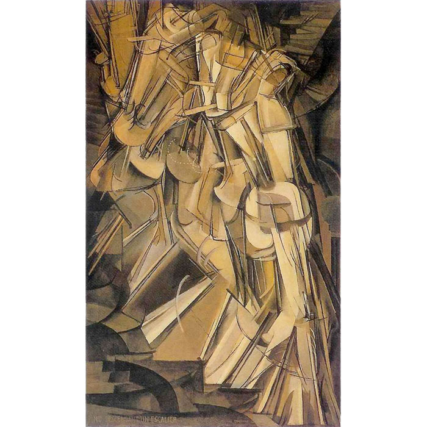
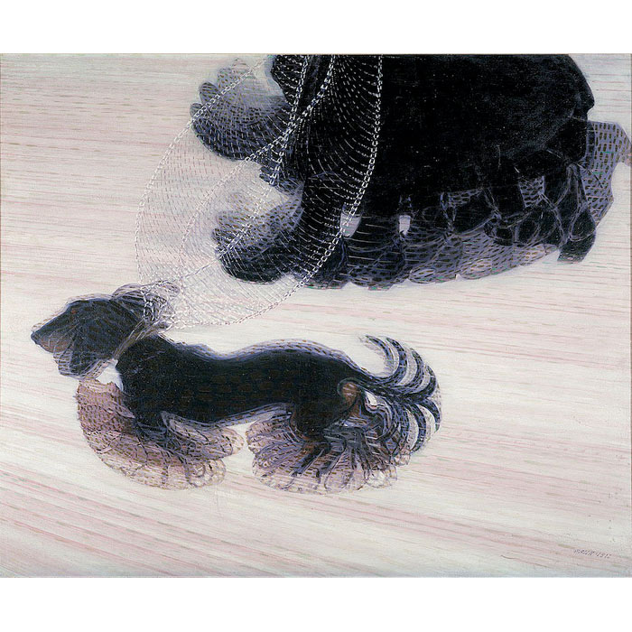

Introduction
The project shows the density of people in a space when they indirectly interact with my artwork. It is a drawing machine which makes art on paper using networking and micro controller. It shows archives of people moving in a space in the past. Questions like how building is used through different time periods? Which route do people take to reach a specific space? Were explored that communicates the idea of present with past in a dedicated space.
Concept and Background Research
Every person has their instinct and they behave in the same place with different movements. The same path taken by the same person may differ daily. Also, I feel how millions of people walk through a space without realizing how that place has its history to tell. I started exploring the behavior of people in a specific building. For example, Hatchlab is quite a juxtaposition of the old and new. I realized how people like to use one way to staircase then another one. I was quite intrigued, these were when I started exploring. There were several questions in my mind that I wanted to explore. Why dont we have data that shows paths/motion people take to consciously or unconsciously? This was the initial thought.
 Many artists get inspired by people moving in a space, for example when we look at Marcel Duchamp's Nude Descending a Staircase from 1912, the artist has painted the motion of a person moving across a staircase which captures the essence of time and space. Though the medium of painting was oil on canvas. In many other Artists like Giacomo Balla's Dynamism of a Dog on Leash, we can notice the silhouette of a dog waging its tail, the energy can be experienced in the painting.
St.James Hatchman building was initially constructed as a church but after refurbishment, it is used as an exhibition space for artists. Every corner of the building has a different scale and feeling. It would be really interesting to mark the trails of people who used or visited this building without revealing their true identity. This dataset-based artwork would be archived for future users. The combination of the traditional medium of art and the strokes were created using machines. These were my practices belonging in conjunction with the traditional art and machines. The art of showing movement in real-time and then making it history was my main Idea behind the whole project.
Different Parts of the church radiate different Energy. For these projects, I was just having a few sensors covering each floor in this building. It was quite interesting to see how machines left marks for people who visited the church.
Technical Implementation
The whole project can be divided into three parts. 1. Data collection of people entering and exiting the building: It is A PCB that has a laser and LDR sensor in it with a raspberry pi Pico W microcontroller that takes the timestamp of people entering and going out of the building. The reason for taking this data was to get a comprehensive idea of people's footprint. They were placed near the door in different parts of the church. In total, there were four sensors, one on each floor. This data collected was then converted into a JSON file.
2. The Drawing Machine: The final output were pens drawing different random trails on paper in different colors showing different density of people in different areas. Here the pens were tied with thread which moved up and down based on the stepper motor connected with them. The whole set of motor and raspberry Pi Pico W were kept in the black box hanging from the ceiling. The reason for using pens was to reduce friction, such that even a small touch can mark a trail on paper. The P5.JS sketch sent signals to Raspberry Pi Pico W in the black box in different intervals of timeframes which was based on the JSON file we got from the people. This interval made a beautiful dataset for each day
3. Projection Mapping: The last part of the project was the projection mapping of the same data that was collected as a JSON file. Here I took a drawing of the building and changed the pixel density in it. Different particles representing people were seen moving from left to right, as they moved pixels around them changed which represents the change in the atmosphere as someone enters a space.

Reflection and Future Development
I would like to explore the movement of people, especially in big spaces like shopping centers and malls for my data collection. For the artwork, I would like to use other mediums instead of pen and paper like smashing tiles that will create colorful mosaics on the floor which represent the intensity of people's footprint. Networking and managing the whole timeframe were the biggest challenges I faced during my final artwork. I was really happy with the whole concept, but I wanted to develop my artwork. I also feel there were too many elements in my work which made it a little confusing for everyone to understand the source from which data was collected. I would like to make a little minimal for my future explorations.
References
- https://globalparliamentofmayors.org/call-to-action-to-prevent-long-term-global-food-crisis/
- https://ourworldindata.org/hunger-and-undernourishment
- https://www.artshelp.com/data-sculpture-food-insecurity/
- http://dataphys.org/list/
- https://editor.p5js.org/jeff Thompson/sketches/30YhUmgVU
- https://www.youtube.com/watch?v=Joy4NQPIOxk&ab_channel=Jeff Thompson
- https://editor.p5js.org/codingtrain/sketches/6WL2O4vq0
- https://editor.p5js.org/codingtrain/sketches/AxuChwlgb
- https://www.youtube.com/watch?v=94SkxSjC91U&ab_channel=MrFotakias